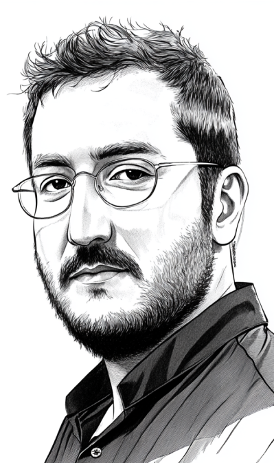

AİLE
SARAH KILINÇ
Ablam sonuçta.
Adam öldürsem de beni seviyordur, değil mi?

FEYYAZ YİĞİT
Geçmişten gelen, acıyla hatırla-yama-dığım bir
"yabancı". Dostlar dışında kalan bir ailem gibi...
DOSTLAR
CENK KURT
Bunca şeye rağmen nasıl sakin kalıyor?
Aklı başında bir o kaldı sanırım.
SERCAN SERVER
Sırtını dönmeyen en eski "dostum".
Bazen tuhaflaşsa da en çok ona güvenirim galiba.
ARKADAŞLAR
Burası şimdilik boş.